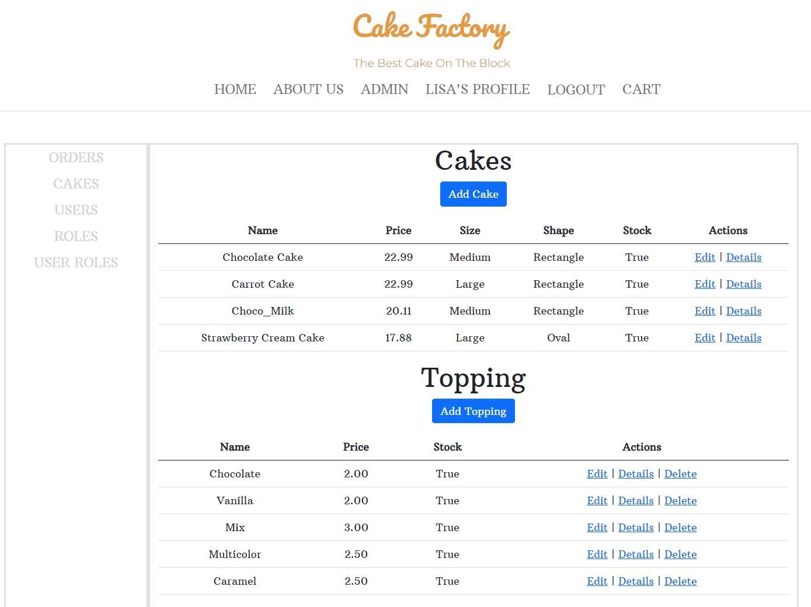
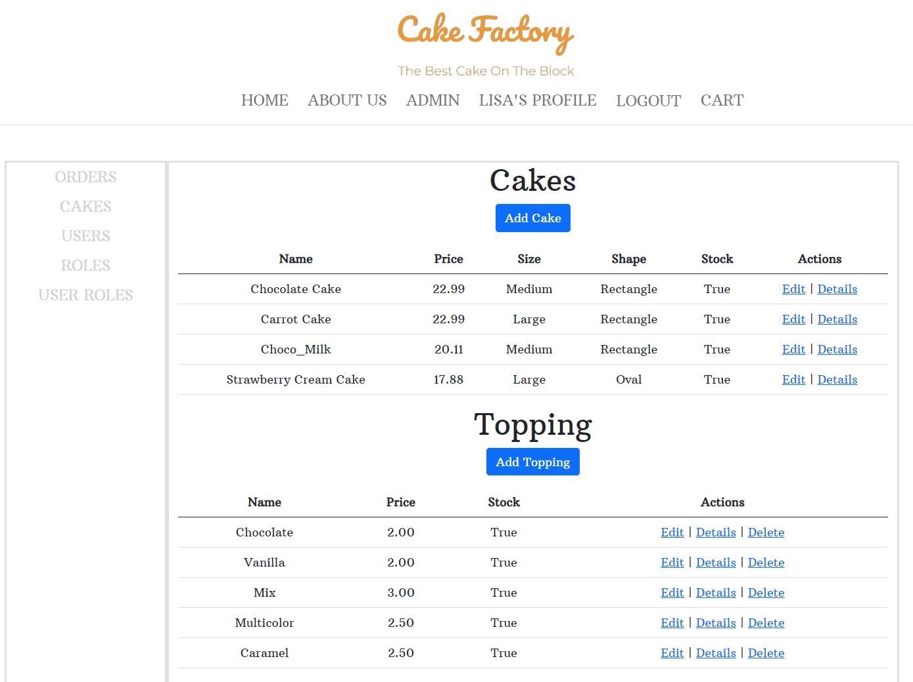

About Me ──
I have a degree in computer engineering and worked as a junior Java web developer for two years.
I gained extensive knowledge of Oracle, Java, and the Spring Framework while maintaining the intranet for the Korean Ministry of Strategy and Finance.
I will graduate from the SSD program in May 2023 and have focused on using dynamic programming languages like JavaScript to manipulate data efficiently.
Work Experience ──
-
Homestay Coordinator - SWITCanada Ltd, Vancouver, Canada
Jun 2016 – Mar 2020
- Managed students' transition to life in Canada
- Prepared business papers
- Completed student Homestay placements
- Guided and advised students and their host families
-
Junior Java Developer - IG Corporation, Daejeon, South Korea
Jan 2013 - Jan 2015
- Collected, organized, and maintained problems
- Emulated or reproduced technical problems encountered by users
- Communicated electronically and in-person with computer users experiencing difficulties to determine and document problems experienced
- Planned, designed, modified, integrated, and tested website-related code
Skills ──
- Languages : C#, Java, PHP, HTML, CSS, JavaScript, jQuery, SQL, Swift, Python
- Frameworks : ASP.NET Core (Web API and MVC), Android, iOS, Angular, Node.js, React
- Databases : MS SQL Server, MySQL, MongoDB, CockroachDB
- Tools : Amazon Web Services, Photoshop, GitHub
Projects ──
-
Cake Pactory - BCIT Internal Project
Developed a website that sells cakes and allows the user to manage customers and customer orders. Additionally, the admin has the ability to manage cake items, sizes, fillings, shapes, and toppings. Created and implemented the database using ASP.NET Core and Entity Framework with a SQL Server backend.
 

-
Movie App - React Project
Users access to the extensive TMDB movie library. This indicates that the website has access to a comprehensive database of movies from TMDB, which means that users can browse and explore a variety of movie information, including titles, genres, release dates, and ratings.

-
Ministry of Strategy and Finance Intranet - Maintenance
Fixed bugs, performed security updates, and conducted software upgrades to ensure the system remained stable, secure, and up-to-date. I also provided user support and troubleshooting, and developed new features and enhancements to improve the functionality of the intranet system using Java and E-government Framework with Oracle.